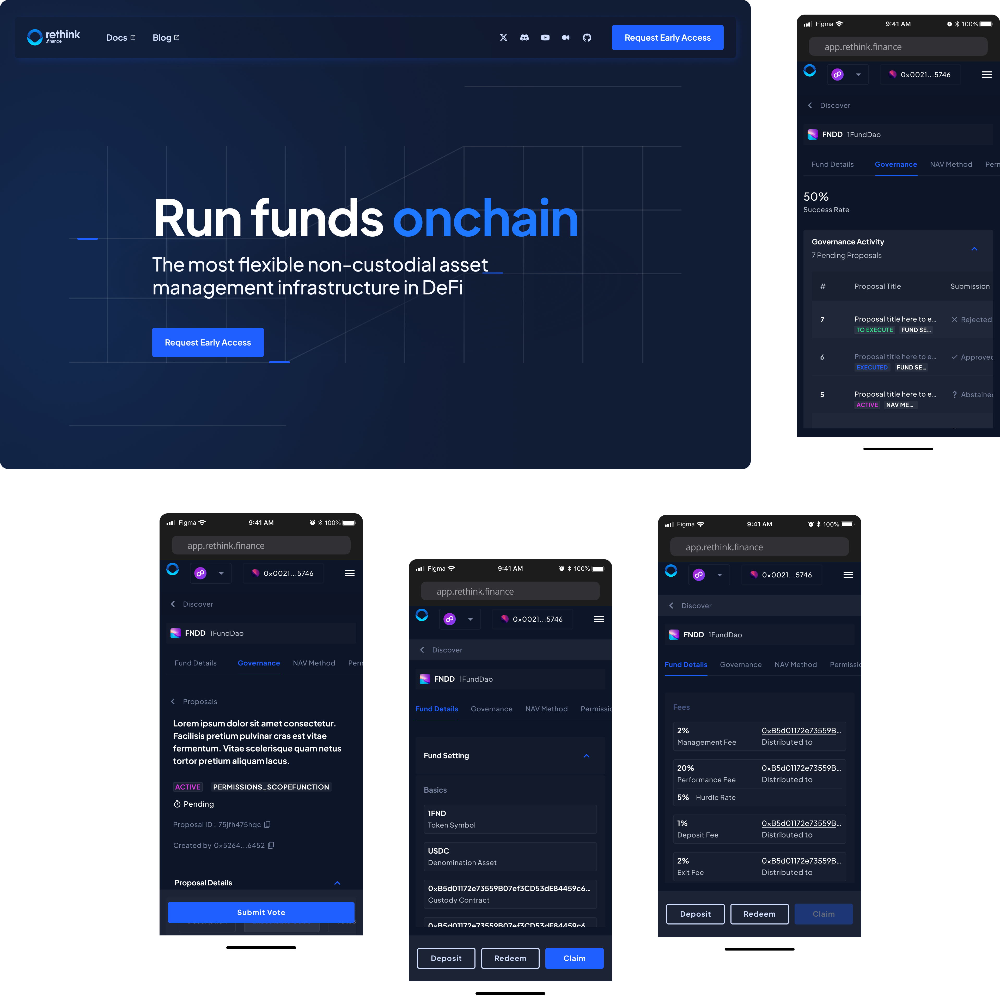
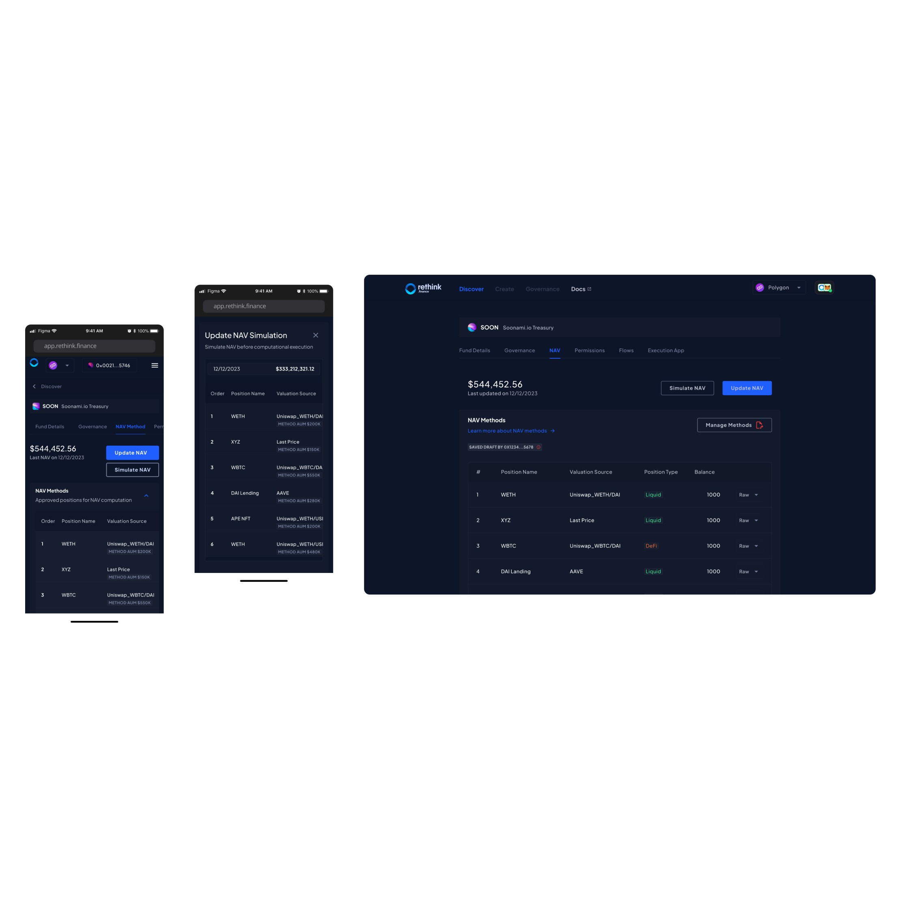
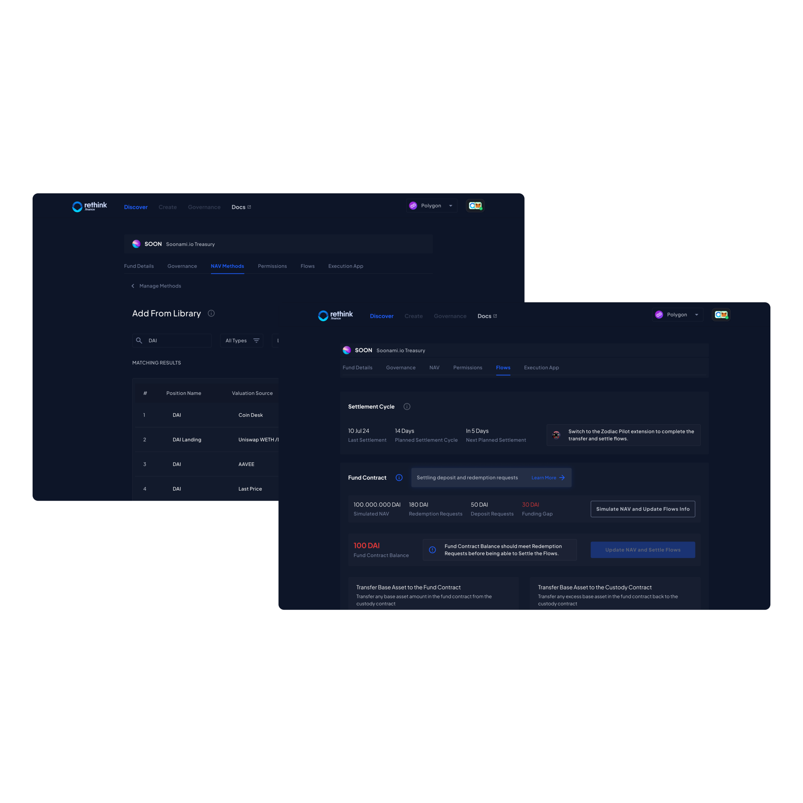
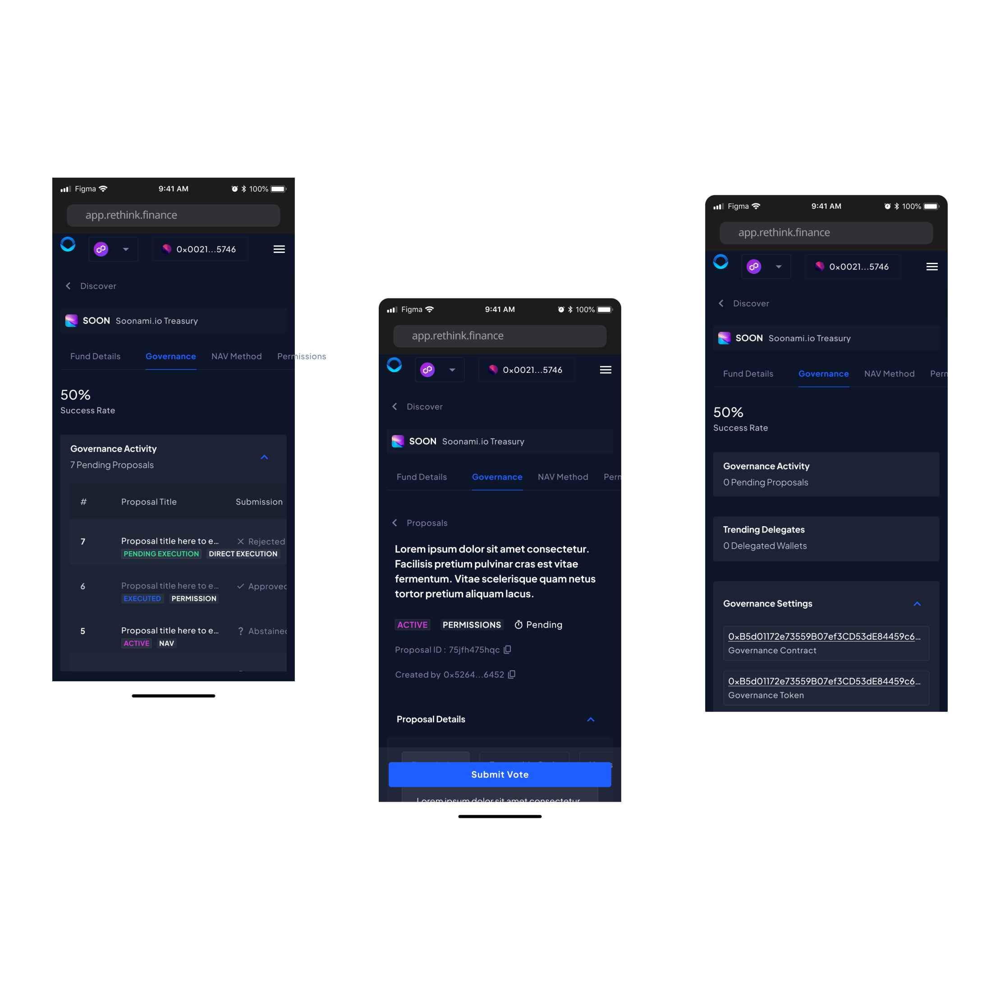

Rethink.Finance
Non-custodial and community-driven fund management

Read more
Updating the Net Asset Value was a complex process, overwhelming both managers and investors with too much chaotic information, through a complex path
Task analysis, heuristic evaluation, competitors and user research informed the new solution.
Breaking the process down into sequential stages and employing the "progressive disclosure" technique allowed users to focus on each step with less effort, avoiding information overload and visual clutter. Furthermore, buttons for unauthorized actions were disabled, and guidance elements and supporting information were incorporated, ensuring a clear and intuitive experience. The NAV update was structured in multiple stages, enabling the manager to either confirm existing positions or modify them by choosing between two options: creating a new position by filling out forms with clear, type-specific requirements, or selecting one from a pre-existing library. These measures improved efficiency and reduced errors, transforming a complex process into a simple, well-guided experience.
Tally’s external governance interface had limitations regarding efficiency, blockchain-independent token management, and traceability, resulting in low participation and operational hurdles.
Task analysis and competitor research defined the requirements and flows of the new solution.
A goal-oriented internal governance interface enabled token management, rigorous proposal status tracking, and streamlined workflows—all within the application—helping users identify priorities, monitor activities, and submit proposals with ease. This improvement led to high participation rates and more meaningful fund management, facilitating decision-making and the execution of related activities. Additionally, a search system optimized navigation across proposals by highlighting progress and vote submission, thereby making it easier to access open proposals and track ongoing results.
Managing the flows between the fund and the custody agreements was crucial for updating the NAV; therefore, a dedicated table was required. The Project Manager's proposal did not clearly enough indicate what action should be taken to enable the NAV-related activities.
Task analysis and user research defined the requirements and flows of the new solution.
The new design ensured that managers were informed of any discrepancy relative to the fund contract, highlighting the exact amount to be transferred from the custody contract to update the NAV. We ensured the user was connected to Zodiac Pilot—a prerequisite for this operation—by flagging the requirement via an alert card that automatically initiated the connection. Since the NAV fluctuates unpredictably, a portion of the amount could result in an excess after the update; therefore, we advised managers to transfer the tokens back to ensure the entire quantity was held by the custody contract. The usability test confimrmed the solution was efficient and easy to use.
Raw code proposal interactions, DeFi governance requirements, governance token setup.


